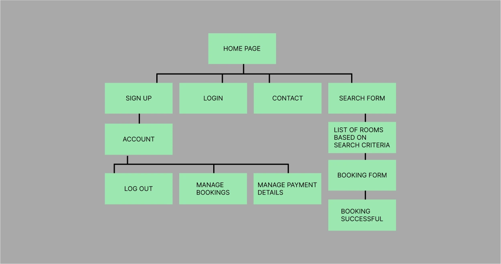
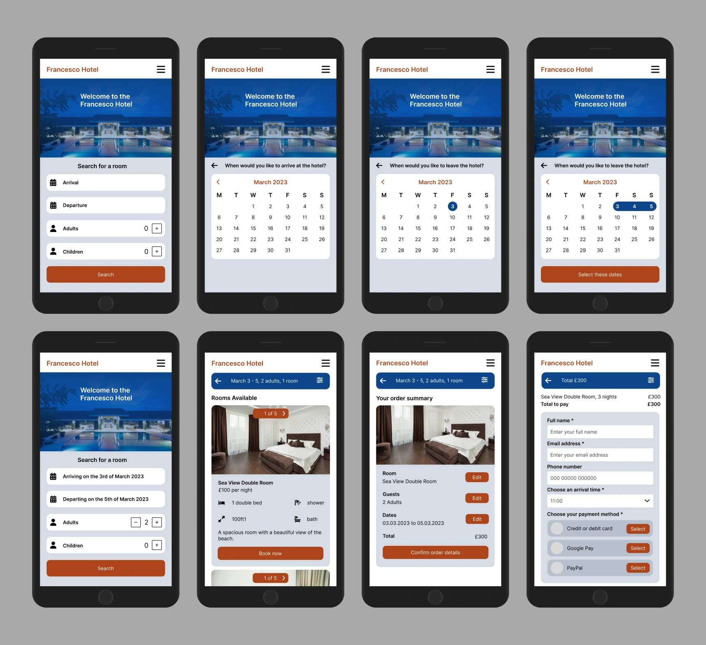

Appointment Booking App
This is a responsive app that helps to make it easy for patients to book appointments at a medical centre. The website helps to reduce the number of calls coming through to the medical centre. This means that the patients who do call in don't have to wait as long for their call to be answered. The doctor adds their availablity in the admin area. The availability is added to the list of available appointments in the booking form.
User Research
User Research Goals
- Understand user goals when using this type of website
- Understand user pain points when using websites
- Understand what type of tasks users carry out on these types of websites
Surveys and Interviews
For the quantitative research, I carried out a survey to find out about what users expect from a medical appointment booking website. For the qualitative research, I interviewed people who had experience with booking medical appointments online.
Key Insights from the User Research
- Site visitors want to be able to set up an account
- Site visitors want to sign in and out of their account easily
- Site visitors want to see a calendar showing available appointments
- Site visitors want to be able to book an appointment easily
- Site visitors don't want to book an appointment that someone else has already booked
- Site visitors want to be able to update or cancel their booking
User Stories
Patient account
- As a patient I want to set up an account so that I can easily book appointments online
- As a patient I want to be able to sign in and out of my account easily
Booking an appointment online
- As a patient I want to book an appointment easily online
- As a patient I want to see a calendar showing available appointments
- As a patient I don't want to book an appointment that someone else has booked
Managing my appointments
- As a patient I want the option to see the appointments that I've booked
- As a patient I want the option of updating my booking
- As a patient I want the option of cancelling my booking
User Journey
Sitemap
Low-Fidelity Wireframes
Here are some low-fidelity wireframes I made for the project.

High-Fidelity Wireframes
Here are some high-fidelity wireframes I made for the project.
